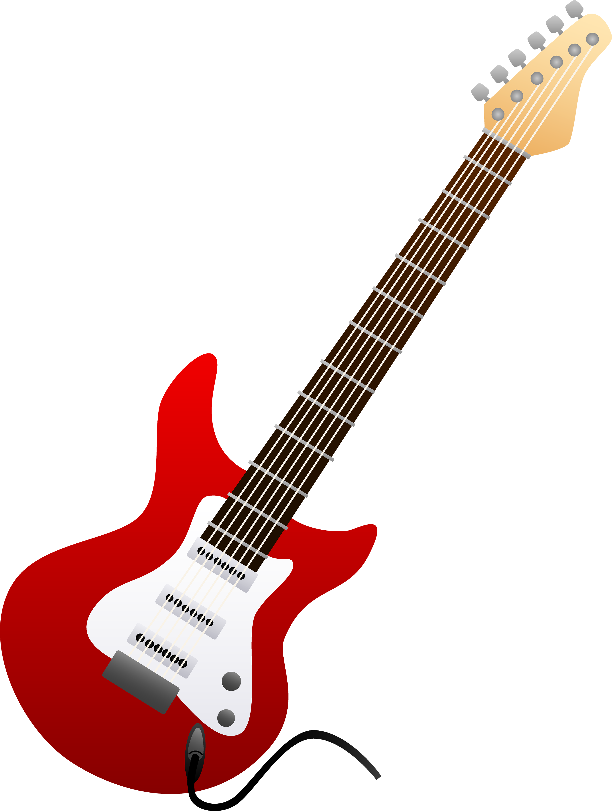

| Виды | Характеристика | Пример |
|---|
| Классическая | Дала рождение всем последующим типам. Её зарождение связывают с Испанией (под влиянием арабской культуры). Уже в XVIII веке инструмент приобрёл современную форму, количество струн, строй и приёмы игры. |  |
| Акустическая | Близкая родственница классической, однако, на ней используются металлические струны, что обусловлено более прочным, и, как следствие, тяжёлым корпусом (в грифе такой гитары обязательно наличие анкерного болта). Сам гриф – более тонкий, а бридж расположен ближе к резонаторному отверстию. |  |
| Электрическая | Предназначена для подключения к усилительному оборудованию, самостоятельного звука почти не выдает, так как имеет цельный корпус. Сигнал формируется с помощью одного или нескольких магнитных звукоснимателей, встроенных в корпус. Вследствие этого, такой сигнал можно усиливать, а также всячески обрабатывать или искажать, для чего служит бесконечное разнообразие всевозможных «примочек». |  |
| Бас-Гитара | Бас гитары обычно имеют четыре струны (они металлические и имеют повышенную толщину), отличаются удлинённым грифом и своеобразным тембром – низким и глубоким. Такая гитара предназначена, чтобы играть басовые партии и добавлять насыщенности музыкальным произведениям. Применяется в джазовой и поп- музыке, а также в роке. В основном используются электрические бас-гитары, реже – акустические. | |